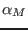
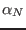
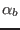

Next: Update time scale ratio Up: Fortran: Module Interface turbulence: Previous: Update turbulence production (Source Contents
INTERFACE:
subroutine alpha_mnb(nlev,NN,SS)DESCRIPTION:
This subroutine updates the dimensionless numbers , , and  according to (45). Note that according to (64) and (67) the following identities are valid
USES:
use turbulence, only: tke,eps,kb use turbulence, only: as,an,at IMPLICIT NONEINPUT PARAMETERS:
integer, intent(in) :: nlev REALTYPE, intent(in) :: NN(0:nlev),SS(0:nlev)REVISION HISTORY:
Original author(s): Lars Umlauf
$Log: alpha_mnb.F90,v $
Revision 1.2 2006-03-20 09:06:37 kbk
removed explicit double precission dependency
Revision 1.1 2005/06/27 10:54:33 kbk
new files needed